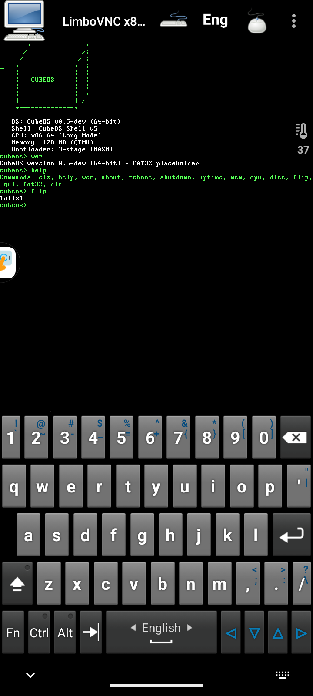
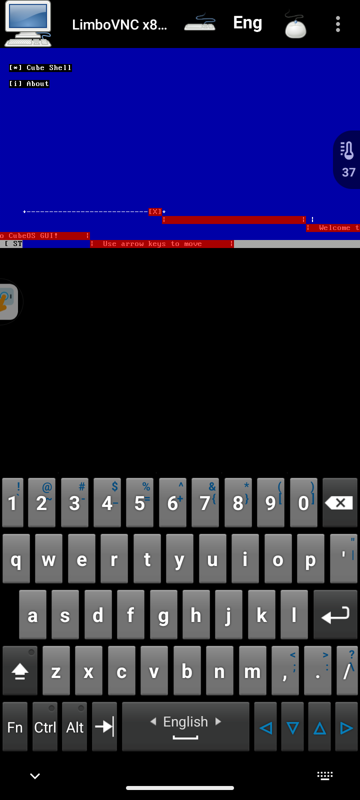

Стабильный релиз
64-bit
CubeOS v0.4
✓ Полностью рабочая версия
🚀 CubeOS — 64-битная операционная система
CubeOS — это моя собственная операционная система, написанная с нуля на NASM. Проект начинался как эксперимент, но вырос в полноценную 64-битную ОС с собственным трёхступенчатым загрузчиком, графическим интерфейсом и поддержкой файловой системы.


📋 Системные требования
- Процессор: x86_64 с поддержкой Long Mode
- Память: 8 МБ (минимум)
- Диск: 20 МБ свободного места
- Платформа: QEMU, VirtualBox, реальное железо (требуется UEFI/BIOS)
🎮 Команды шелла
cls — очистить экран
help — показать справку
ver — версия системы
about — информация об ОС + neofetch
reboot — перезагрузка
shutdown — выключение
uptime — время работы системы
mem — информация о памяти
cpu — информация о процессоре
dice — бросить кубик (1-6)
flip — орёл или решка
gui — запустить графический интерфейс
help — показать справку
ver — версия системы
about — информация об ОС + neofetch
reboot — перезагрузка
shutdown — выключение
uptime — время работы системы
mem — информация о памяти
cpu — информация о процессоре
dice — бросить кубик (1-6)
flip — орёл или решка
gui — запустить графический интерфейс
🖥️ Графический интерфейс (GUI)
Псевдографический оконный менеджер в стиле Windows 3.11/95:
- ✓ Окна с заголовками и рамками
- ✓ Перемещение окон стрелками клавиатуры
- ✓ Кнопка "Пуск" и меню
- ✓ Ярлыки на рабочем столе
- ✓ Выход по клавише ESC
📂 Файловая система
В разработке — поддержка FAT32 и собственной файловой системы CubeFS. На данный момент реализован каркас с возможностью чтения диска через ATA PIO драйвер.
cubeos> fat32 — инициализация FAT32
cubeos> dir — просмотр файлов (в разработке)
cubeos> dir — просмотр файлов (в разработке)
🛠️ Технологии
- Языки: NASM (ассемблер)
- Архитектура: 64-bit Long Mode
- Графика: VGA текстовый режим (80x25)
📥 Установка и запуск
# 1. Скачать образ cubeos.img
# 2. Запустить в QEMU:
qemu-system-x86_64 -drive format=raw,file=cubeos.img -m 128M
# Или в Limbo x86 на Android
# Или записать на флешку через dd
dd if=cubeos.img of=/dev/sdX bs=512
# 2. Запустить в QEMU:
qemu-system-x86_64 -drive format=raw,file=cubeos.img -m 128M
# Или в Limbo x86 на Android
# Или записать на флешку через dd
dd if=cubeos.img of=/dev/sdX bs=512
📊 Версии
- v0.4 — Стабильная версия (рекомендуется)
- v0.5-dev — Разрабатываемая версия с ATA драйвером
- v0.6-dev — Экспериментальная версия с FAT32
🔧 Планы на будущее
- ✓ Полноценная поддержка FAT32 / CubeFS
- ✓ Свой ATA/IDE драйвер
- ✓ Графический режим VESA
- ✓ Мультизагрузка (Linux, Windows)
- ✓ Сетевой стек (планируется)
📸 Скриншоты


🔗 Ссылки
CubeOS — полностью домашняя разработка. Начало проекта: 27 января 2026 года.
Made with ❤️ by CubeDev